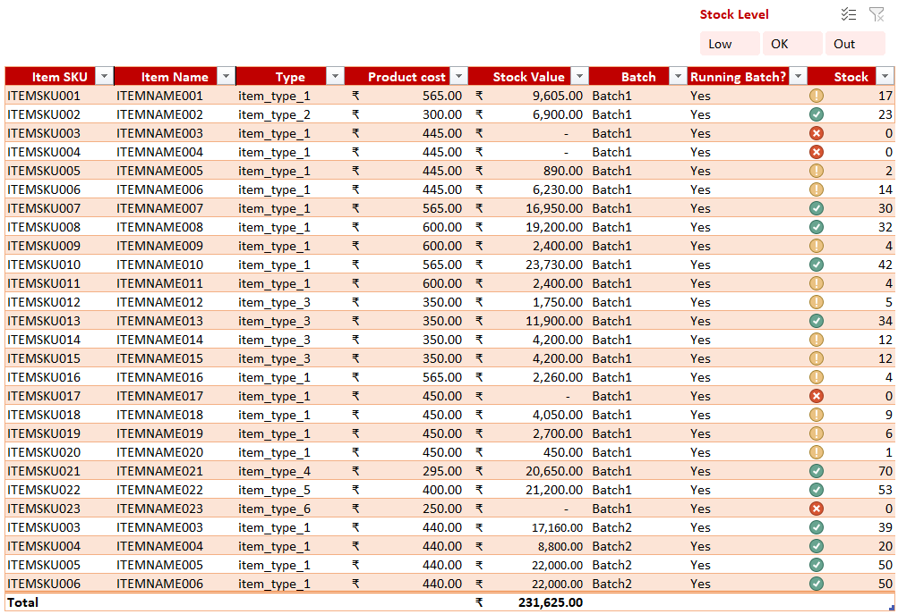
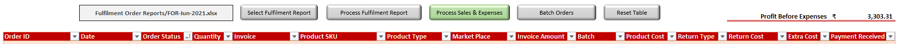
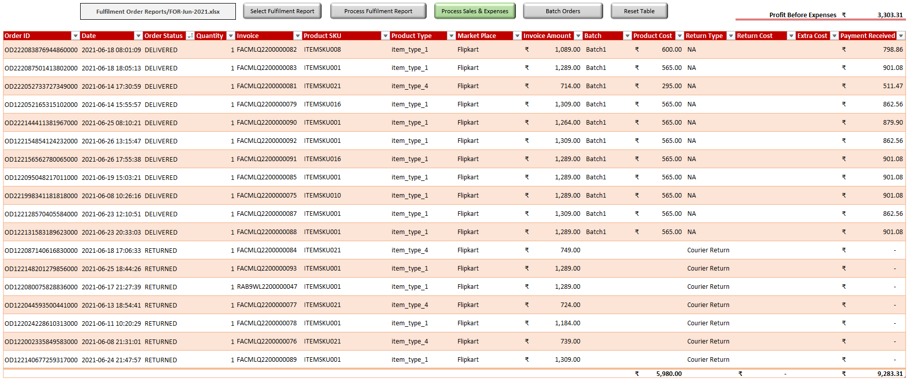
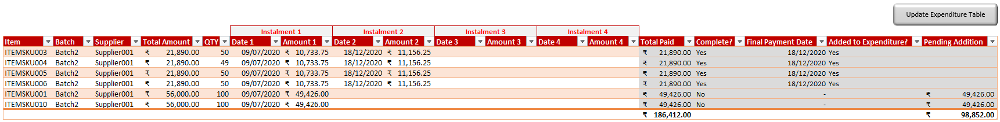

Sales & Inventory Management System
Microsoft Office Excel
Visual Basic for Application (VBA)Excel features used:
Pivot Table
Macro
Table
Slicer
Conditional Formatting
TextToColumnsExcel formulae used:
=IF()
=IFERROR()
=VLOOKUP()
=LEFT()
=ABS()
=AND()
=SUM()
Problem Definition
Rayford is a start-up company based in southern state of India, Kerala, and sells products via online marketplaces such as Amazon and Flipkart. I started helping out Rayford during my spare time with their digital journey with the goal of improving efficiency by transforming their paper based processes into automated digital workflows.
Current Process
Rayford currently uses paper based processes to record every aspect of the business such as sales, inventory and expenses. Due to paper based processes, the company experiences productivity loss and struggle to stay on top of daily tasks and workflows. They are on the verge of hiring a new employee to delegate the day-to-day tasks. However, hiring a new employee will not resolve the problems faced by the company whilst putting further financial strain on the company.
Investigation
In order to identify inefficiencies and pinpoint solutions to fix the problems, I first need to understand all the steps involved in current processes within every aspect of the business. To help me map out current processes and pinpoint digitisation opportunities in the company, I started off with the following questions:
- How/where does each process start and end?
- What data is currently used/stored?
- Where is the data captured from?
- What reports are currently available for download from online marketplaces?
Analysis
Functional Requirements
| No. | Requirement |
|---|---|
| 1 | The system must be able to process orders to work out the profit before expenses. |
| 2 | The system must be able to keep a record of all orders received. |
| 3 | The system must be able to keep track of inventory. |
| 4 | The system should be able to hold multiple entries in inventory for one item with different cost price and stock count. |
| 5 | Inventory should be able to show the stock value of all items in the inventory. |
| 6 | The system should be able to highlight the stock level of each item in the inventory. |
| 7 | The system should be able to keep a record of all the investments made into the business. |
| 8 | The system should be able to keep a record of all payments received by the business. |
| 9 | The system should be able to keep a record of all expenses and payments made by the business. |
| 10 | The system should be able to keep a record of all the purchases made by the business. Each purchase can be paid in multiple instalments (up to a maximum of four). |
| 11 | When a payment is complete for purchase, the payment details should appear in expenses with the total amount paid and the date of final payment. |
| 12 | The system should be able to display monthly profits and expenses to work out the net profit as well as net profit divided by three. |
| 13 | The user should be able to record the amount paid to each partner as monthly profit. |
| 14 | The user should be able to make brief notes regarding profits and expenses for each month. |
| 15 | The system should have a balance sheet that updates automatically. |
Design and Development
Inventory
To keep track of the inventory, I created a table called InventoryTable. The Column 'Batch' is used to distinguish between multiple entries of one item with different cost price and column 'Running Batch?' is used to allow the system to identify the batch to use when processing orders.
The stock count is updated when an order is processed which then updates the stock value and stock level. The total of stock value is displayed at the bottom of 'Stock Value' column and different colours are used to highlight the stock level of each item so that the user can easily identify items that are low/out of stock.
Processing Orders
To process orders, I created two tables named SalesTable and AllSalesTable. SalesTable is used to keep a record of all orders received during a month before it gets processed and moved to AllSalesTable. SalesTable can be populated automatically using the reports downloaded from the dashboard of online marketplaces.
To select a report of orders, the user clicks on 'Select Fulfilment Report' which allows the user to browse the report saved in the device. The file path and name of the selected file is then displayed in the box next to the button.
To process the selected report, the user then clicks on 'Process Fulfilment Report' which process all orders contained in the selected report. When orders get processed, the system looks in the inventory for the first running batch with stock count greater than zero as well as other reports downloaded from the online marketplace dashboards. The stock count is reduced by the order quantity and cost price is brought in to the SalesTable from Inventory. When the order report is processed successfully, the SalesTable looks like below:
processMonthlyOrder():
The macro assigned to 'Process Fulfilment Report' button is processMonthlyOrder() which is used to populate the SalesTable and starts off by reading the file selected using the 'Select Fulfilment Report' button. This macro makes use of ListObjects property of the Worksheet object to manipulate table objects, Abs function to compute the absolute value of a number, if and with statements, methods such as TextToColumns and sort, and formulae such as vlookup, left etc.
Code used for processMonthlyOrder():Public Sub processMonthlyOrder()
If MsgBox("Process orders?", vbYesNo) = vbNo Then Exit Sub
Application.ScreenUpdating = False
Dim tblSales As ListObject
Set tblSales = ActiveWorkbook.Sheets("Sales").ListObjects("SalesTable")
'Getting file name of selected fulfilment report
ForFile = ThisWorkbook.Names("varFORfile").RefersToRange
'File path + File name
ForFilePath = ActiveWorkbook.Path & "\" & ForFile
'Count of columns in sales table
Dim countColumns As Integer
countColumns = ActiveWorkbook.Sheets("Sales").ListObjects("SalesTable").ListColumns.Count
'Count of rows in sales table
countSalesRows = tblSales.ListRows.Count
If countSalesRows = 0 Then
'Adding row if there are no rows
tblSales.ListRows.Add
ElseIf countSalesRows > 1 Then
'Calling resetTable if there are more than one row in sales table
Call resetTable("SalesTable", countColumns)
tblSales.ListRows.Add
End If
'MsgBox ForFilePath
'Opening fulfilment report
Workbooks.Open Filename:=ForFilePath, ReadOnly:=True
'Name of fulfilment report
ForName = ActiveWorkbook.Name
Worksheets("Orders").Activate
Range("A1").Select
Selection.AutoFilter
'Count of rows in fulfilment report
countRows = ActiveCell.CurrentRegion.Rows.Count
'Converting quantity from text to number format
Range("K:K").TextToColumns Destination:=Range("K:K"), DataType:=xlDelimited
'Sorting dataset on order_item_status by descending. Otherwise data doesn't copy properly if the second order is a cancelled order
Range("A2:AO" & countRows).Sort key1:=Range("G2:G" & countRows), order1:=xlDescending, Header:=xlNo
'Exculding cancelled orders
ActiveSheet.Range("$A$1:$AM$" & countRows).AutoFilter Field:=7, Criteria1:="<>CANCELLED"
'Hiding columns that are not needed
Range("C:D,F:F,H:J").EntireColumn.Hidden = True
'Copying order_id, Date, Order_status and Quatity from fulfilment report
Range("B2:K" & countRows).SpecialCells(xlCellTypeVisible).Copy
Workbooks("Sales and Inventory Management v2.xlsm").Activate
'Pasting values to sales table
tblSales.DataBodyRange(1, 1).Select
ActiveSheet.Paste
Application.CutCopyMode = False
'Sorting table on Order Status by ascending
With tblSales.Sort
.SortFields.Clear
.SortFields.Add Key:=Range("SalesTable[Order Status]"), SortOn:=xlSortOnValues, Order:=xlAscending
.Header = xlYes
.Apply
End With
'Closing fulfilment report without saving
Workbooks(ForName).Close SaveChanges:=False
'Opening Settled Payment Report
Workbooks.Open Filename:=ActiveWorkbook.Path & "\Settled Payment Reports\SPR-All-2020.xlsx", ReadOnly:=True
Workbooks("Sales and Inventory Management v2.xlsm").Activate
'Invoice
tblSales.DataBodyRange(1, 5).FormulaR1C1 = _
"=IFERROR(VLOOKUP([@[Order ID]],'[SPR-All-2020.xlsx]Orders'!C6:C70,63,FALSE),""Not Found in SPR"")"
'Product SKU
tblSales.DataBodyRange(1, 6).FormulaR1C1 = _
"=IFERROR(VLOOKUP([@[Order ID]],'[SPR-All-2020.xlsx]Orders'!C6:C70,17,FALSE),""Not Found in SPR"")"
'Product Type
tblSales.DataBodyRange(1, 7).FormulaR1C1 = _
"=IFERROR(VLOOKUP([@[Order ID]],'[SPR-All-2020.xlsx]Orders'!C6:C70,19,FALSE),""Not Found in SPR"")"
'Market Place
tblSales.DataBodyRange(1, 8).FormulaR1C1 = _
"=IF(LEFT([@[Order ID]],2)=""OD"",""Flipkart"",""Other"")"
'Invoice Amount
tblSales.DataBodyRange(1, 9).FormulaR1C1 = _
"=IFERROR(VLOOKUP([@[Order ID]],'[SPR-All-2020.xlsx]Orders'!C6:C70,24,FALSE),""Not Found in SPR"")"
'Return Type
tblSales.DataBodyRange(1, 12).FormulaR1C1 = _
"=IFERROR(VLOOKUP([@[Order ID]],'[SPR-All-2020.xlsx]Orders'!C6:C70,21,FALSE),""Not Found in SPR"")"
'Return Cost
tblSales.DataBodyRange(1, 13).FormulaR1C1 = _
"=IFERROR(IF(VLOOKUP([@[Order ID]],'[SPR-All-2020.xlsx]Settled Amount'!C1:C2,2,FALSE)>=0,"""",ABS(VLOOKUP([@[Order ID]],'[SPR-All-2020.xlsx]Settled Amount'!C1:C2,2,FALSE))),""Not Found in SPR"")"
'Payment Received
tblSales.DataBodyRange(1, 15).FormulaR1C1 = _
"=IFERROR(IF(VLOOKUP([@[Order ID]],'[SPR-All-2020.xlsx]Settled Amount'!C1:C2,2,FALSE)<0,"""",VLOOKUP([@[Order ID]],'[SPR-All-2020.xlsx]Settled Amount'!C1:C2,2,FALSE)),""Not Found in SPR"")"
'Copying and pasting the above formulae as values
tblSales.DataBodyRange.Select
Selection.Copy
Selection.PasteSpecial Paste:=xlPasteValues, Operation:=xlNone, SkipBlanks:=False, Transpose:=False
Application.CutCopyMode = False
'Closing Settled Payment Report without saving
Workbooks("SPR-All-2020.xlsx").Close SaveChanges:=False
'Calling batchOrders Sub
batchOrders
tblSales.DataBodyRange(1, 1).Select
Application.ScreenUpdating = True
End Sub
batchOrders():
The macro batchOrders() is called within the processMonthlyOrder() macro and is used to update the InventoryTable after finding the first running batch with stock count greater than zero in the InventoryTable. The batch name and the product cost of that item from the particular batch is then recorded in columns 'Batch' and 'Product Cost' in SalesTable.In case an inventory record with running batch with stock is not found for an order, the values of columns 'Batch' and 'Product Cost' from SalesTable is updated to "Not Batched". In this instance, the user can investigate and rectify the error in InventoryTable and 'Batch Orders' button can be used to batch the orders that were not previously batched. If statements are used to identify orders from SalesTable that needs to be batched whilst looping through SalesTable and at the same time, a for loop is also used to loop through InventoryTable to find the current running batch with stock for each unbatched order.
batchOrders() is kept as a separate function in order to use it as and when needed and within the processMonthlyOrder() macro.
Processing Sales and Expenses
Once all sales and expenses are entered into their respective tables, the sales and expenses can then be processed by clicking on the 'Process Sales & Expenses' button. Upon clicking this button, a validation check is run to check if all orders are batched. If there are any unbatched orders, the process is terminated whilst alerting the user to it. If all orders are batched, the ProfitTable in 'Balance Sheet' tab, as well as AllSalesTable and ExpenditureTable are updated. AllSalesTable is updated with all records from SalesTable whilst ExpenditureTable is updated with all records from ExpensesTable. Contents in both SalesTable and ExpensesTable are then cleared and both tables are resized to one row by calling the resetTable() macro.
processSales():
The macro assigned to the 'Process Sales & Expenses' button is processSales() and the code is given below:Sub processSales()
'
'
'
If MsgBox("Process all orders in sales table", vbYesNo, "Are you sure?") = vbNo Then Exit Sub
Application.ScreenUpdating = False
Dim tblSales As ListObject
Set tblSales = ActiveWorkbook.Sheets("Sales").ListObjects("SalesTable")
Dim tblAllSales As ListObject
Set tblAllSales = ActiveWorkbook.Sheets("All Sales").ListObjects("AllSalesTable")
Dim tblExpenses As ListObject
Set tblExpenses = ActiveWorkbook.Sheets("Payments").ListObjects("ExpensesTable")
Dim tblProfit As ListObject
Set tblProfit = ActiveWorkbook.Sheets("Balance Sheet").ListObjects("ProfitTable")
Dim tblExpenditure As ListObject
Set tblExpenditure = ActiveWorkbook.Sheets("Accounts").ListObjects("ExpenditureTable")
'-----------------------------< Updating ProfitTable >------------------------------------
'Getting the month name of first date in SalesTable
firstDate = tblSales.DataBodyRange.Cells(1, 2).Value
monthNum = Mid(firstDate, 6, 2)
Month_Name = MonthName(monthNum)
'Getting the profit before expenses amount from Sales tab
Dim profitBeforeExpenses As Double
profitBeforeExpenses = ThisWorkbook.Names("ProfitBeforeExp").RefersToRange
'Getting the total monthly expense
Dim monthExpTotal As Double
amountCol = tblExpenses.ListColumns("Amount").Index
monthExpTotal = tblExpenses.TotalsRowRange(1, amountCol).Value
'Net profit
Dim netProfit As Double
netProfit = profitBeforeExpenses - monthExpTotal
'Getting the index of columns in profit table
monthCol = tblProfit.ListColumns("Month").Index
profit_before_expCol = tblProfit.ListColumns("Profit Before Expense").Index
expenseCol = tblProfit.ListColumns("Expense").Index
net_profitCol = tblProfit.ListColumns("Net Profit").Index
Col_profitSplit = tblProfit.ListColumns("Profit Split").Index
'Adding new row to ProfitTable
tblProfit.ListRows.Add AlwaysInsert:=True
'Getting the number of last row
LastProfitRow = tblProfit.DataBodyRange.Rows.Count
'Adding values to new row in ProfitTable
tblProfit.DataBodyRange.Cells(LastProfitRow, monthCol) = Month_Name
tblProfit.DataBodyRange.Cells(LastProfitRow, profit_before_expCol) = profitBeforeExpenses
tblProfit.DataBodyRange.Cells(LastProfitRow, expenseCol) = monthExpTotal
tblProfit.DataBodyRange.Cells(LastProfitRow, net_profitCol) = netProfit
tblProfit.DataBodyRange.Cells(LastProfitRow, Col_profitSplit) = netProfit / 3
'-----------------------------< \Updating ProfitTable >------------------------------------
'----------------------------< Copying the SalesTable into AllSalesTable >----------------------------
tblAllSales.ListRows.Add AlwaysInsert:=True
LastAllSalesRow = tblAllSales.DataBodyRange.Rows.Count
tblSales.DataBodyRange.Select
Selection.Copy
Worksheets("All Sales").Activate
tblAllSales.DataBodyRange(LastAllSalesRow, 1).Select
Selection.PasteSpecial Paste:=xlPasteValues, Operation:=xlNone, SkipBlanks:=False, Transpose:=False
Application.CutCopyMode = False
'Count of columns in sales table
Dim countColumns As Integer
countColumns = ActiveWorkbook.Sheets("Sales").ListObjects("SalesTable").ListColumns.Count
'Reset sales table
Call resetTable("SalesTable", countColumns)
'----------------------------< \Copying the SalesTable into AllSalesTable >----------------------------
'--------------------< Copying the ExpensesTable into ExpenditureTable >----------------------
Worksheets("Payments").Activate
'Getting the number of last row
On Error Resume Next
LastExepenseRow = tblExpenses.DataBodyRange.Rows.Count
On Error GoTo 0
If LastExepenseRow > 0 Then
tblExpenditure.ListRows.Add AlwaysInsert:=True
LastExpenditureRow = tblExpenditure.DataBodyRange.Rows.Count
tblExpenses.DataBodyRange.Select
Selection.Copy
Worksheets("Accounts").Activate
tblExpenditure.DataBodyRange(LastExpenditureRow, 1).Select
Selection.PasteSpecial Paste:=xlPasteValues, Operation:=xlNone, SkipBlanks:=False, Transpose:=False
Application.CutCopyMode = False
New_LastExpenditureRow = tblExpenditure.DataBodyRange.Rows.Count
Col_Type = tblExpenditure.ListColumns("Type").Index
If (New_LastExpenditureRow - LastExpenditureRow) = 0 Then
tblExpenditure.DataBodyRange.Cells(LastExpenditureRow, Col_Type) = "Monthly Expense"
ElseIf (New_LastExpenditureRow - LastExpenditureRow) > 0 Then
cellFrom = tblExpenditure.DataBodyRange.Cells(LastExpenditureRow, Col_Type).Address
cellTo = tblExpenditure.DataBodyRange.Cells(New_LastExpenditureRow, Col_Type).Address
Range(cellFrom & ":" & cellTo) = "Monthly Expense"
End If
'Count of columns in ExpensesTable
countColumns = ActiveWorkbook.Sheets("Payments").ListObjects("ExpensesTable").ListColumns.Count
'Reset sales table
Call resetTable("ExpensesTable", countColumns)
End If
'--------------------< \Copying the ExpensesTable into ExpenditureTable >----------------------
Worksheets("Sales").Activate
Range("A5").Select
Application.ScreenUpdating = True
MsgBox "Complete"
End Sub
processPurchase():
PurchaseTable keeps a record of all purchases made by the business and payments for each purchase are made up of upto four instalments. The date and amount of each instalment is recorded when it's paid and the total amount paid upto that point is displayed in 'Total Paid' column whereas the 'Total Amount' column holds the amont that needs to be paid to complete the instalments. The 'Total Paid' amount is then compared with 'Total Amount' automatically to display whether the payment is complete or not in 'Complete?' column and the final payment date is shown in 'Final Payment Date'. When the payment is complete, the user can then click on 'Update Expenditure Table' button to add the purchase into ExpenditureTable and once added, the 'Added to Expenditure?' column is updated to show the user that payment has been added. The 'Pending Addition' column is to account for the payments made, that aren't yet added to the ExpenditureTable, in the balance sheet. The macro assigned to 'Update Expenditure Table' button is processPurchase() and the code is given below:
Sub processPurchase()
If MsgBox("Update Expenditure Table?", vbYesNo, "Are you sure?") = vbNo Then Exit Sub
Application.ScreenUpdating = False
Dim tblParchase As ListObject
Set tblParchase = ActiveWorkbook.Sheets("Purchase").ListObjects("PurchaseTable")
Dim tblExpenditure As ListObject
Set tblExpenditure = ActiveWorkbook.Sheets("Accounts").ListObjects("ExpenditureTable")
'Getting the number of last row
LastPurchaseRow = tblParchase.DataBodyRange.Rows.Count
added = 0
For x = 1 To LastPurchaseRow
tblParchase.DataBodyRange.Cells(x, 15).Select
'Getting the required values from PurchaseTable
valComplete = tblParchase.DataBodyRange.Cells(x, 15).Value
valAdded = tblParchase.DataBodyRange.Cells(x, 17).Value
If valComplete = "Yes" And valAdded <> "Yes" Then
valProduct = tblParchase.DataBodyRange.Cells(x, 1).Value
valBatch = tblParchase.DataBodyRange.Cells(x, 2).Value
valSupplier = tblParchase.DataBodyRange.Cells(x, 3).Value
valTotalPaid = tblParchase.DataBodyRange.Cells(x, 14).Value
valFinalDate = tblParchase.DataBodyRange.Cells(x, 16).Value
tblExpenditure.ListRows.Add AlwaysInsert:=True
LastExpenditureRow = tblExpenditure.DataBodyRange.Rows.Count
tblExpenditure.DataBodyRange(LastExpenditureRow, 1) = valFinalDate
tblExpenditure.DataBodyRange(LastExpenditureRow, 2) = "Rayford"
tblExpenditure.DataBodyRange(LastExpenditureRow, 3) = valSupplier
tblExpenditure.DataBodyRange(LastExpenditureRow, 4) = valProduct & ", " & valBatch
tblExpenditure.DataBodyRange(LastExpenditureRow, 5) = valTotalPaid
tblExpenditure.DataBodyRange(LastExpenditureRow, 6) = "Purchase"
tblParchase.DataBodyRange.Cells(x, 17).Value = "Yes"
added = added + 1
End If
Next x
MsgBox added & " purchase(s) added to Expenditure"
Application.ScreenUpdating = True
End Sub
resetTable():
resetTable() function is used to set SalesTable and/or ExpensesTable to their original state by resizing them whilst clearing their contents. This is kept as a separate function in order to use it as and when needed and within the processSales() macro.
Balance Sheet
The 'Balance Sheet' tab contains Rayford's balance sheet and ProfitTable. Balance sheet contains formulae to gather data from other places
within the workbook and gets updated automatically whenever the value of a cell included in the formulae changes.
The bottom part of the tab holds the ProfitTable which gets updated when the sales and expenses are processed using processSales() macro.
Evaluation
Degree of Success
Assessing the extent to which I met the requirements and objectives of the client.| Requirement | Degree to which it has been met |
|---|---|
| The system must be able to process orders to work out the profit before expenses. | Fully met |
| The system must be able to keep a record of all orders received. | Fully met |
| The system must be able to keep track of inventory. | Fully met |
| The system should be able to hold multiple entries in inventory for one item with different cost price and stock count. | Fully met |
| Inventory should be able to show the stock value of all items in the inventory. | Fully met |
| The system should be able to highlight the stock level of each item in the inventory. | Fully met |
| The system should be able to keep a record of all the investments made into the business. | Fully met |
| The system should be able to keep a record of all payments received by the business. | Fully met |
| The system should be able to keep a record of all expenses and payments made by the business. | Fully met |
| The system should be able to keep a record of all the purchases made by the business. Each purchase can be paid in multiple instalments (up to a maximum of four). | Fully met |
| When a payment is complete for purchase, the payment details should appear in expenses with the total amount paid and the date of final payment. | Fully met |
| The system should be able to display monthly profits and expenses to work out the net profit as well as net profit divided by three. | Fully met |
| The user should be able to record the amount paid to each partner as monthly profit. | Fully met |
| The user should be able to make brief notes regarding profits and expenses for each month. | Fully met |
| The system should have a balance sheet that updates automatically. | Fully met |
Desirable Extensions
I have successfully delivered this project within the agreed timeframe and have met all the requirements agreed with the client. However, I wish to add a dashboard to the Excel workbook for the Rayford management team, to provide them with at-a-glance view of key performance indicators (KPIs).
- Data shown in screenshots are altered and anonymised to protect sensitive information.